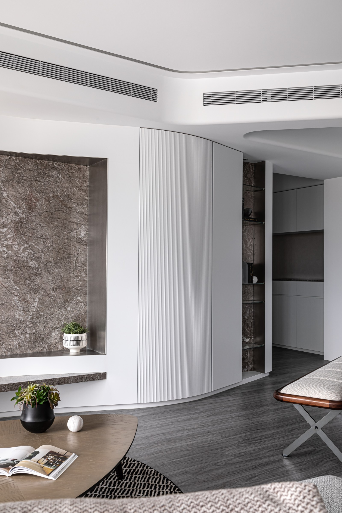

精確，是這個空間唯一的裝飾。
Precision is the only ornament this space allows.



01
原始平面裡，玄關門一開就正對廚房。廚房的位置牽動管線，動了就是另一個工程。
所以要處理的不是廚房，是進門的那一眼。這個判斷決定了後面所有的事。
In the original plan, the entrance door faced the kitchen directly. Relocating the kitchen would have meant relocating the plumbing, and a different project altogether.
So the problem to solve was never the kitchen. It was the first line of sight. Every decision that follows comes from that.


02
公共區的轉角站著一個深色量體。它不靠牆，四個角收圓。進門的第一眼落在它身上，廚房入口被讓到視線的側邊。
它不只是一道擋。深色是滿場白裡唯一的重量，像圓規的針一樣定住一個點。空間的延展從那裡量起。
A dark volume stands at the corner of the public area. It touches no wall, and all four corners are rounded. The eye lands on it first, and the kitchen entrance falls to the side.
It is not a screen. In a room this pale, it is the only weight, and it holds a point the way a compass needle does. The reach of the space is measured from there.


03
天花的圓角、櫃體的轉角、客廳外側那道牆的弧度，半徑出自同一組數字。大的用大的，小的用小的。天花全部走 R45。
客廳外側那道牆不是直的，它先往外鼓再往內收。視線離開量體之後貼著這些弧走，從餐廳掃到客廳，再繞回窗邊。
沒有一條是隨手畫的。
The rounded corners of the ceiling, the turns of the cabinetry, the curve of the wall along the living room: their radii come from one fixed set. Large where the element is large, small where it is small. Every ceiling corner is R45.
The wall along the living room is not straight. It swells outward, then draws back in. Leaving the volume, the eye rides these curves from the dining area across the living room and back to the window.
Not one of them was drawn by hand.

04
天花做平最省事。樑下、管線、風管全部塞進同一個厚度，拉一片平的過去，全室是 233。
主臥、書房、客廳、客房最後都是 270。差的那 37 公分不是多出來的，是從管線層裡留下來的。作法是不把天花當成一片，讓幾塊面從 233 的底上浮起來，管線只走它們之間。
塊與塊之間留一道窄縫，邊界互相對位，客廳那塊的斜邊直接接到餐廳那塊的斜邊。抬頭看是連續的，其實是好幾塊在對位。
A flat ceiling is the cheapest way through. Beams, conduit and ductwork all go into one depth, a single plane is pulled across, and the whole apartment sits at 233.
The main bedroom, the study, the living room and the guest room all finished at 270. Those 37 centimetres were not added. They were kept back from the service layer. The ceiling is not one plane but several, floating up from a 233 base, with the services running only in between.
A narrow reveal separates each panel, and their edges are aligned to one another: the diagonal of the living room panel meets the diagonal of the dining panel exactly. It reads as continuous. It is in fact several pieces holding a line.


05
只有餐廳那塊是 265，比別人低 5 公分。冷氣主機藏在那裡，主機的厚度就是那 5 公分。
風管從主機沿著斜邊走。出風口沒有開在板底，開在斜邊的側面，做成一條跟板邊等長的縫。回風收在另外兩邊。
那條斜邊同時在做兩件事，把視線往深處帶，以及送風。
Only the dining panel sits at 265, five centimetres below the rest. The air handling unit is concealed inside it, and the depth of that unit is exactly those five centimetres.
Ductwork runs from the unit along the diagonal. The supply is not cut into the underside of the panel but into the side of that diagonal, as a slot the same length as the edge. Return air is taken from the two other sides.
That diagonal is doing two things at once: carrying the eye into the depth of the room, and delivering air.


06
白不能只有一種。牆和天花的漆面把光吃進去，整面沒有亮點。門片與牆齊平，把手內嵌，關上之後是一整面。直紋溝槽板的溝槽把光切成一條一條，同一片櫃子，左邊看和右邊看是兩種深淺。
同一個顏色，三種對光的反應。
White cannot be one thing. The paint on the walls and ceiling absorbs the light and holds an even surface with no highlight. Doors sit flush with the wall, handles recessed, so a closed door is simply more wall. The grooves of the fluted cabinetry cut the light into bands, and one cabinet reads at two different depths from the left and from the right.
One colour, three ways of answering light.

07
弧角沒有用矽利康填縫，改用金屬條收口。填縫是把誤差蓋掉，收口是把誤差先做到金屬條進得去。同一個轉角，兩種做法，決定的時間點不一樣。一個在現場，一個在圖上。
面板的寬高、溝縫的疏密、圓角的半徑，這些數字在有顏色的空間裡沒有人會看。在這裡它們是唯一的視覺語言。
The curved corners are not filled with silicone. They are closed with a metal trim. Filling covers the error; trimming requires the error to be small enough for the trim to enter in the first place. The same corner, two methods, decided at two different moments: one on site, one on the drawing.
Panel proportions, the spacing of the reveals, the radius of each corner. In a room with colour, no one reads these numbers. Here they are the only visual language there is.
All Photos